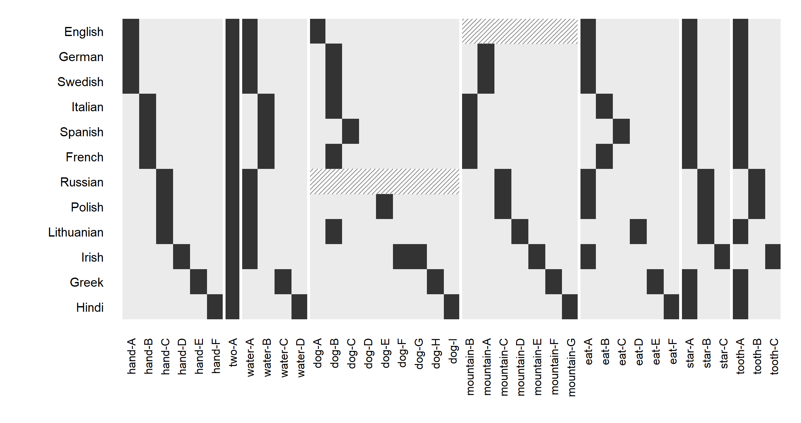
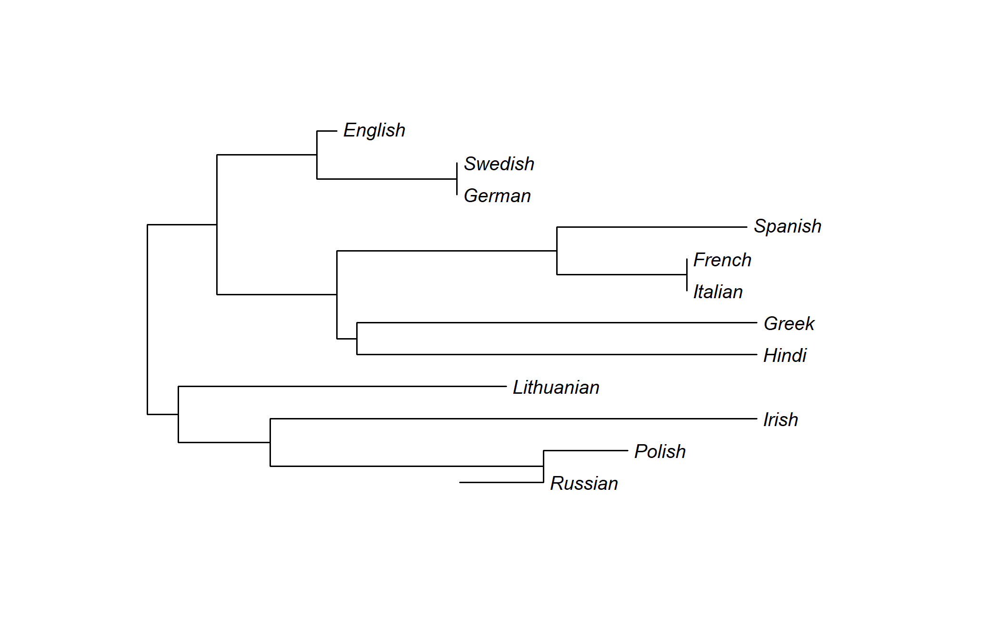
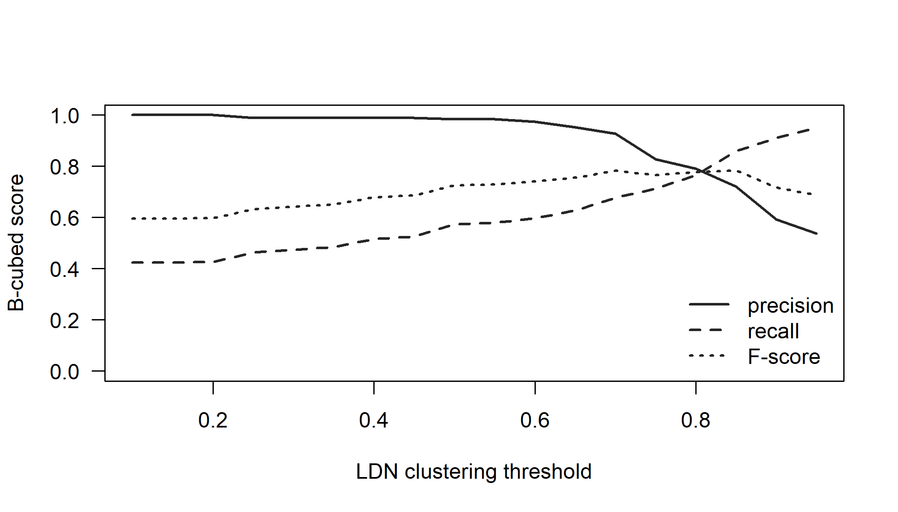
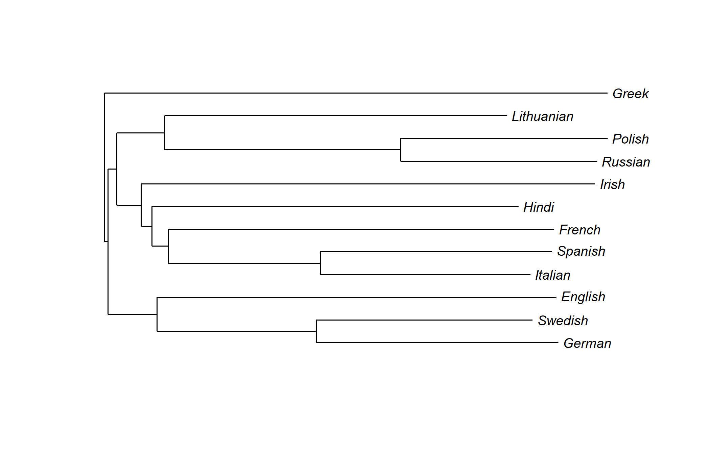

Chapter 3 Linguistic Data for Phylogenetics
Phylogenetic methods do not operate on languages; they operate on data matrices. Every analysis in this book begins with a table whose rows are languages and whose columns are characters, and every result depends on how that table was built: which varieties were chosen as rows, which features as columns, how each cell was judged, and how uncertain those judgements were. Two analyses with identical models but differently built matrices can disagree more than two analyses with different models and the same matrix. This chapter is about the decisions that go into the matrix and about the evidential weight that different kinds of characters can bear. A small hand-typed Indo-European word list, turned into a cognate matrix and an automatic cognate clustering in R, lets us watch each decision in action.
After reading this chapter you should be able to:
- Explain why cognacy, not similarity, is the linguistic counterpart of homology, and how the depth of cognate judgements affects the characters.
- Decide which varieties to sample as taxa, including how to treat attested ancient languages, reconstructed proto-languages and dialect continua.
- Code a word list as binary and multistate cognate characters in R, with loans kept, coded as missing or dropped, and describe the consequences of each choice.
- Identify the main sources of uncertainty in cognate judgements and of dependence between characters, and say which models or analyses account for them.
- Compare the evidential status of lexical, phonological, morphological and syntactic characters, including the Parametric Comparison Method.
- Describe CLDF, Glottolog, Concepticon and Lexibank, and evaluate automated cognate detection with B-cubed scores.
3.1 From words to characters
3.1.1 Taxa, characters and states
In biology a character is a heritable feature that varies among taxa, and its values are character states. A nucleotide position in an aligned gene is a character with four states (A, C, G, T); the presence or absence of wings is a character with two. The data for a phylogenetic analysis form a matrix \(D\) whose entry \(D_{ij}\) is the state of character \(j\) in taxon \(i\). Almost every model in this book assumes that characters evolve independently along the same tree, so that the probability of the whole matrix is a product over characters (Chapter 5). The two fundamental requirements on a character are therefore that its states in different taxa be homologous, that is, comparable because they descend from a common ancestral state, and that characters be (approximately) independent of one another.
In linguistics the taxa are languages, but even that is not straightforward. A “language” in a dataset is really a particular variety as documented in a particular source, at a particular time, by a particular fieldworker or lexicographer. The term doculect has been proposed for this unit (Cysouw and Good 2013). Two datasets that both contain “Hindi” may contain different doculects, and a dataset may contain several varieties that others would treat as dialects of one language. These decisions affect tree shape, the apparent density of sampling, and the estimates of rates and dates (Chapters 2 and 15).
The characters can be of many kinds. The vast majority of published linguistic phylogenies use lexical characters derived from cognate judgements in basic vocabulary, because these are plentiful, comparatively easy to collect for many languages, and relatively resistant to borrowing. Smaller numbers of studies use structural (typological) characters, phonological characters such as sound changes, or morphological characters such as paradigm irregularities. Each kind of data comes with its own notion of homology and its own pitfalls.
3.1.2 Cognacy as homology
The linguistic counterpart of homology is cognacy. Two words in different languages are cognate if they descend, by ordinary inheritance, from the same word in a common ancestral language. English two, German zwei, Latin duo, Russian dva and Sanskrit dvā́ are cognate because they all continue the Proto-Indo-European word for ‘two’, usually reconstructed as *dwóh₁. Their resemblance in form is a consequence of common descent, not the criterion for it. The criterion is the existence of regular sound correspondences: systematic, recurring relationships between the sounds of words with related meanings across the languages, of the kind formulated as sound laws (Campbell 2013; Hock and Joseph 1996). English t corresponds to German z [ts] not only in two/zwei but in ten/zehn, tongue/Zunge, tooth/Zahn and to/zu, a correspondence explained by the High German consonant shift. Once such correspondences have been established, they allow cognates to be recognized even when they look nothing alike (English wheel and Sanskrit cakrá- ‘wheel’ are cognate), and non-cognates to be rejected even when they look identical.
The rejection of look-alikes is as important as the recognition of cognates. English have and Latin habere ‘to have’ are similar in sound and meaning but are not cognate; the regular correspondences show that have goes back to the same root as Latin capere ‘to take’, while habere continues a different root. English day and Latin dies ‘day’ are likewise unrelated, as are English much and Spanish mucho, or English bad and Persian bad ‘bad’. Chance resemblances of this kind are surprisingly frequent: with thousands of words in each language and a limited inventory of sounds, some pairs will match by accident (Ringe 1992; Kessler 2001). This is why phylogenetic analyses of lexical data are almost always built on expert cognate judgements grounded in the comparative method, or on automated methods that attempt to emulate it (Section 3.12), rather than on raw similarity of form.
Cognacy is also a matter of depth. English hound and German Hund are cognate within Germanic; Latin canis, Greek kúōn and Lithuanian šuõ go back to the same Proto-Indo-European root for ‘dog’. Whether a dataset places all of these in one cognate set depends on the time depth at which cognacy is judged. Most datasets aimed at a single family code cognacy at the level of the family’s proto-language (so that Hund and canis are cognate), but there are exceptions, and analyses of subgroups sometimes use shallower judgements. The choice matters because deeper judgements create fewer, larger cognate sets and therefore fewer characters with different distributions across the tree.
3.2 Choosing and coding the taxa
The rows of the matrix deserve as much thought as the columns. Phylogenetic models assume that each tip is a lineage that evolved independently of the others after it split from its sister, and that the tips are sampled in a way the tree prior can describe (Chapter 6). Linguistic taxa fit this picture to varying degrees, and three situations need particular care.
3.2.1 Dialects, languages and sampling density
Whether two varieties count as one language or two is partly a political decision, and dialect continua have no natural cut points (Chapter 1). The choice still has consequences. Sampling many closely related varieties from one branch and one variety from another changes the shape of the tree, shortens some terminal branches and lengthens others, and can bias rates and dates, because the tree prior and the clock model both see the sample as if it were representative. A single variety standing for a whole branch also has a long terminal branch, which makes it vulnerable to long-branch attraction (Section 4.14). A useful rule is to decide the sampling scheme from the question: for the deep structure of a family, sample each major branch with several well-documented and well-separated varieties, preferably including its most divergent ones; for the internal history of one subgroup, sample its dialects densely but think about whether a tree is the right model at all (Chapter 8).
3.2.2 Attested ancient languages: ancestors, sisters or members of a dialect network?
Written records give linguistics something that most of biology lacks: dated observations of earlier stages of the same lineages. But an attested ancient language can stand in three different relationships to the modern languages in a dataset, and they call for different treatments.
- An ancestor, or nearly so. The attested variety lies on the path from the root to some modern tips, with no or very little independent change of its own. The Old Norse of medieval Icelandic manuscripts, in relation to Modern Icelandic, is close to this case. In a tree it is a sampled ancestor: a tip with a zero-length branch, or a node on a branch.
- A sister. The attested variety belongs to a lineage that split off before the common ancestor of the modern languages and then died out. Gothic, the only well-attested East Germanic language, is the sister of the ancestor of North and West Germanic, not the ancestor of either; Hittite and the other Anatolian languages left no descendants at all. Such varieties are tips on side branches that end at their date of attestation.
- A member of a dialect network. The attested variety is one standardized or literary variety among many spoken ones, and the modern languages descend from its unrecorded neighbours. Classical Latin is the literary language of a speech community whose spoken varieties gave rise to the Romance languages; the West Saxon of most Old English texts is not the direct ancestor of Modern Standard English, which descends mainly from Midland dialects; and Classical Arabic stands in a similar relation to the modern Arabic dialects. Here neither “ancestor” nor “sister” is literally true: the attested variety and the real ancestor were near-contemporaries in one network, sharing most of their vocabulary but not all of it.
These possibilities affect sampling, coding and interpretation. A tree prior without sampled ancestors forces a nearly ancestral variety onto a side branch with a length of its own. In dated analyses this can push the root deeper, which is the core of the debate over the “ancestry constraints” of Chang et al. (2015) and the sampled-ancestor analyses of Heggarty et al. (2023) (Sections 10.6 and 10.6.4). Coding raises its own problems. The vocabulary of an ancient language is known from a corpus, not from elicitation. A meaning that is unattested in the surviving texts must be coded as missing (?), never as absent, and the word that a corpus happens to use for a meaning may be a literary or genre-specific choice rather than the everyday basic word. The phonology behind an ancient orthography is itself a reconstruction, so cognate judgements involving ancient forms carry extra uncertainty. And the “date” of an ancient tip is the date range of a corpus that may span centuries, which is better represented by a prior on the tip age than by a fixed number (Section 10.5.1). Ancient languages typically have much more missing data than modern ones, and the way missing data enter the likelihood can influence where they are placed (Section 10.5.3).
Whether the data can distinguish the three situations is an empirical question that deserves to be asked explicitly. Under a fossilized birth-death prior the probability that a tip is a sampled ancestor is, in the vocabulary of Section 6.10, identifiable under the model, but with a few hundred lexical characters and much missing data it may not be practically estimable: the posterior probability of ancestry can then be driven more by the prior on the sampling process than by the words. Two practical consequences follow. Report the prior as well as the posterior probability that each ancient tip is an ancestor, and check how dates change when ancient varieties are treated as ancestors, as sisters, or are removed and used only as calibrations. And interpret a “sampled ancestor” for a variety such as Classical Latin as a statement that it is very close to the ancestral network, not as a claim that the Romance languages descend from Cicero’s prose.
3.2.3 Reconstructed proto-languages are not data
Some databases include reconstructed proto-languages alongside attested ones; the Polynesian dataset used in Chapter 17, for example, contains a Proto-Polynesian “variety”. A reconstruction is an inference from the daughter languages, made with the comparative method and usually with a particular subgrouping in mind. Including it as a tip counts the daughters’ evidence twice and builds the expected answer into the data. Reconstructions are valuable for checking ancestral state estimates (Chapter 12) and for designing cognate sets, but they should be removed before inferring a tree.
3.3 Basic vocabulary lists
3.3.1 The Swadesh lists
Lexical phylogenetics inherited its data from lexicostatistics, and in particular from the word lists devised by Morris Swadesh (Chapter 1). The idea was to compare languages on a fixed list of basic meanings: concepts expected to be lexicalized in every language, independent of culture and environment, and resistant to replacement by borrowing. The original 200-item list (Swadesh 1952) contains pronouns, body parts, numerals, natural phenomena, basic actions and properties. Swadesh later reduced it to 100 items (Swadesh 1955), dropping meanings that proved hard to elicit unambiguously, culturally specific, or prone to borrowing. The Swadesh 100 and 200 lists, and variants of them, remain the most widely used meaning lists in the field.
Swadesh lists have well-known problems. Many items are ambiguous as glosses: ‘lie’ (recline, or tell a falsehood?), ‘bark’ (of a tree, or of a dog?), ‘dull’ (of a knife, or of a person?). Others, such as ‘snow’ or ‘ice’, are not lexicalized separately in every language, while some, like ‘we’, may correspond to two words (inclusive and exclusive) in languages that make that distinction. Lists also exist in many slightly different versions, and two datasets labelled “Swadesh 200” may not contain exactly the same meanings. These issues are not trivial, because the choice of which word fills a meaning slot determines its cognate class. Kassian et al. (2010) provided a detailed semantic specification of the 100-item list to reduce this ambiguity, and IE-CoR has invested heavily in precise meaning definitions for the same reason (Heggarty et al. 2023).
Fieldwork on poorly documented languages makes the problem concrete. Discussing Muno, a language of Papua New Guinea that he documented, Rönchen (2025) notes that its numerals above six are loans from Tok Pisin, that the word for ‘dog’ is unlikely to be older than the arrival of dogs in New Guinea, that ‘we’ has inclusive and exclusive (and possibly dual) forms, and that the very short stems of complex verbs make cognates hard to identify. He concludes that word lists should be tailored to the region and family rather than treated as universal, and that the “raw data” of lexical phylogenetics are already products of analysis. The idea is older than modern phylogenetics. McMahon and McMahon (2005) review regionally adapted Swadesh lists, among them lists for Southeast Asia and for Australia that add meanings such as ‘armpit’ or ‘goanna’, and suggest keeping a common core while substituting items within the same semantic field; in the Andes, for instance, ‘llama’ can replace ‘cow’, whose words are uniformly Spanish loans and so say nothing about relations among the indigenous languages. The price of such flexibility is comparability across families, which matters more for global analyses than for the phylogeny of a single family.
3.3.2 Lists designed from data
Later lists were constructed from empirical evidence about stability or borrowability. The Leipzig-Jakarta list of 100 meanings was derived from the World Loanword Database (WOLD), which recorded loanwords for more than 1,400 meanings in 41 languages from around the world (Haspelmath and Tadmor 2009a). The meanings were ranked by a combination of how rarely they were borrowed, how often they were expressed by simple (unanalysable) words, and how old the words tended to be, and the top 100 formed the list (Tadmor et al. 2010). Its overlap with the Swadesh 100 is substantial but not complete; it includes, for instance, ‘ant’ and ‘wing’, which are not on the Swadesh 100.
The ASJP list of 40 meanings was selected by the Automated Similarity Judgment Program team as the subset of the Swadesh 100 whose words were most stable, judged by how consistently they were shared within known language groups, and which gave the best classification results (Holman et al. 2008). The brevity of the list is what made it possible for ASJP to collect word lists for the great majority of the world’s languages (Wichmann et al. 2022). Other short lists include Dolgopolsky’s list of about 15 especially stable meanings, compiled for long-range comparison (Dolgopolsky 1986), and the 35-item list of S. Yakhontov used in the Moscow school of comparative linguistics. At the other extreme, project-specific lists may be longer: the Austronesian Basic Vocabulary Database uses a list of 210 meanings (Greenhill et al. 2008), and IE-CoR uses 170 meanings (Heggarty et al. 2023).
| List | Meanings | Selection basis | Typical use |
|---|---|---|---|
| Swadesh 200 | 200 | intuition: universal, culture-free meanings | lexicostatistics, early phylogenies (e.g. Dyen et al. data) |
| Swadesh 100 | 100 | subset of the 200 list, removing problematic items | most lexical datasets |
| Leipzig-Jakarta | 100 | low borrowability, simple words, age (from WOLD) | borrowing-resistant comparisons |
| ASJP | 40 | stability within known groups; classification performance | global-scale automated classification |
| Dolgopolsky | about 15 | stability in long-range comparison | deep (long-range) comparison |
| ABVD | 210 | Swadesh-type list adapted for Austronesian | Austronesian phylogenies |
| IE-CoR | 170 | Swadesh-type list with precise meaning definitions | Indo-European phylogenies |
3.3.3 Stability, borrowability and frequency
Basic vocabulary was chosen in the hope that it would be stable and rarely borrowed. Both hopes are only partly met. Stability varies enormously across meanings. Some meanings, such as low numerals, pronouns and words for ‘name’, ‘eye’ or ‘water’, tend to retain the same word over thousands of years, while others, such as ‘dirty’, ‘bad’ or ‘to throw’, are replaced frequently. Pagel et al. (2007) showed that across Indo-European the rate of lexical replacement in a meaning is strongly and negatively related to how frequently the meaning is used in everyday speech (Chapter 9). Such variation among characters is not a problem in itself, since modern models allow rates to vary among characters (Chapter 7), but it is a strong reason not to assume a uniform rate, as glottochronology did. Borrowing in basic vocabulary is also not negligible. In the WOLD sample, loanwords made up on average roughly a quarter of the vocabulary, with much lower proportions in basic meanings but substantial variation across languages (Tadmor 2009). English, for instance, borrowed the basic pronoun they and words such as sky and skin from Old Norse.
3.3.4 Concepts, glosses and Concepticon
Because so many lists exist, comparing or merging datasets requires knowing which meaning in one list corresponds to which meaning in another. A gloss such as “bark” or “to lie” is not enough. The Concepticon project addresses this by linking the meanings (“concepts”) of hundreds of published lists to a common set of concept sets, each with a unique identifier and a definition (List et al. 2016). A dataset whose meanings are linked to Concepticon can be aligned with any other linked dataset automatically, which is one of the foundations of the large-scale data aggregation described in Section 3.11.
3.4 Coding cognates as characters
3.4.1 A toy dataset
To make the coding schemes concrete, we use a small hand-typed word list: eight meanings in twelve Indo-European languages, with orthographic forms, a rough phonetic transcription in a simplified ASCII alphabet loosely modelled on the ASJP transcription system, and expert-style cognate judgements. The cognate judgements follow standard etymological reference works, but a few are judgement calls, discussed below; the dataset is for illustration only.
langs <- c("English", "German", "Swedish", "Italian", "Spanish", "French",
"Russian", "Polish", "Lithuanian", "Irish", "Greek", "Hindi")
wl <- rbind(
data.frame(Language = langs, Concept = "hand",
Form = c("hand", "Hand", "hand", "mano", "mano", "main", "ruka", "ręka",
"ranka", "lámh", "chéri", "hāth"),
Phon = c("hEnd", "hant", "hand", "mano", "mano", "mE", "ruka", "rENka",
"ranka", "lav", "xeri", "hat"),
Cognate = c("A", "A", "A", "B", "B", "B", "C", "C", "C", "D", "E", "F")),
data.frame(Language = langs, Concept = "two",
Form = c("two", "zwei", "två", "due", "dos", "deux", "dva", "dwa", "du",
"dó", "dýo", "do"),
Phon = c("tu", "cvai", "tvo", "due", "dos", "do", "dva", "dva", "du",
"do", "Dio", "do"),
Cognate = "A"),
data.frame(Language = langs, Concept = "water",
Form = c("water", "Wasser", "vatten", "acqua", "agua", "eau", "voda",
"woda", "vanduo", "uisce", "neró", "pānī"),
Phon = c("wat3r", "vas3r", "vat3n", "akwa", "agwa", "o", "voda", "voda",
"vandua", "iSk3", "nero", "pani"),
Cognate = c("A", "A", "A", "B", "B", "B", "A", "A", "A", "A", "C", "D")),
data.frame(Language = c(langs[1:9], "Irish", "Irish", "Greek", "Hindi"),
Concept = "dog",
Form = c("dog", "Hund", "hund", "cane", "perro", "chien", "sobaka",
"pies", "šuo", "madra", "gadhar", "skýlos", "kuttā"),
Phon = c("dag", "hunt", "hund", "kane", "pero", "SyE", "sabaka", "pyes",
"Suo", "madr3", "gair", "skilos", "kuta"),
Cognate = c("A", "B", "B", "B", "C", "B", "D", "E", "B", "F", "G", "H",
"I")),
data.frame(Language = langs, Concept = "mountain",
Form = c("mountain", "Berg", "berg", "montagna", "montaña", "montagne",
"gora", "góra", "kalnas", "sliabh", "vounó", "pahāṛ"),
Phon = c("mauntin", "berk", "bery", "montaNa", "montaNa", "motaN",
"gora", "gura", "kalnas", "Sliav", "vuno", "pahar"),
Cognate = c("B", "A", "A", "B", "B", "B", "C", "C", "D", "E", "F", "G")),
data.frame(Language = langs, Concept = "eat",
Form = c("eat", "essen", "äta", "mangiare", "comer", "manger", "jest'",
"jeść", "valgyti", "ith", "tróo", "khānā"),
Phon = c("it", "es3n", "et3", "manjare", "komer", "maZe", "yest",
"yeSc", "valgiti", "i", "troo", "kana"),
Cognate = c("A", "A", "A", "B", "C", "B", "A", "A", "D", "A", "E", "F")),
data.frame(Language = langs, Concept = "star",
Form = c("star", "Stern", "stjärna", "stella", "estrella", "étoile",
"zvezda", "gwiazda", "žvaigždė", "réalta", "astéri",
"tārā"),
Phon = c("star", "Stern", "Sarna", "stela", "estreya", "etual",
"zvezda", "gvyazda", "Zvaigzde", "relt3", "asteri", "tara"),
Cognate = c("A", "A", "A", "A", "A", "A", "B", "B", "B", "C", "A", "A")),
data.frame(Language = langs, Concept = "tooth",
Form = c("tooth", "Zahn", "tand", "dente", "diente", "dent", "zub", "ząb",
"dantis", "fiacail", "dóndi", "dā̃t"),
Phon = c("tu8", "can", "tand", "dente", "diente", "da", "zup", "zomp",
"dantis", "fiak3l", "Dondi", "dat"),
Cognate = c("A", "A", "A", "A", "A", "A", "B", "B", "A", "C", "A", "A"))
)
wl$CogID <- paste(wl$Concept, wl$Cognate, sep = "-")
wl$Loan <- (wl$Language == "English" & wl$Concept == "mountain") |
(wl$Language == "Russian" & wl$Concept == "dog")
dim(wl)#> [1] 97 7#> Language Concept Form Phon Cognate CogID Loan
#> 1 English hand hand hEnd A hand-A FALSE
#> 2 German hand Hand hant A hand-A FALSE
#> 3 Swedish hand hand hand A hand-A FALSE
#> 4 Italian hand mano mano B hand-B FALSEThis is a long (or “tidy”) table with one row per word, the format used by CLDF and by tools such as LingPy and EDICTOR. Table 3.2 shows the cognate classes in the more familiar wide format, one column per meaning.
wide <- tapply(paste0(wl$Form, " (", wl$Cognate, ")"),
list(factor(wl$Language, levels = langs), wl$Concept),
paste, collapse = ", ")
knitr::kable(wide[, c("hand", "two", "water", "dog", "mountain", "eat",
"star", "tooth")],
caption = paste(
"The toy word list: forms with cognate class labels (letters are",
"local to each meaning). Irish has two synonyms for 'dog'. English",
"'mountain' (from French) and Russian 'sobaka' (probably from an",
"Iranian language) are flagged as loanwords."))| hand | two | water | dog | mountain | eat | star | tooth | |
|---|---|---|---|---|---|---|---|---|
| English | hand (A) | two (A) | water (A) | dog (A) | mountain (B) | eat (A) | star (A) | tooth (A) |
| German | Hand (A) | zwei (A) | Wasser (A) | Hund (B) | Berg (A) | essen (A) | Stern (A) | Zahn (A) |
| Swedish | hand (A) | två (A) | vatten (A) | hund (B) | berg (A) | äta (A) | stjärna (A) | tand (A) |
| Italian | mano (B) | due (A) | acqua (B) | cane (B) | montagna (B) | mangiare (B) | stella (A) | dente (A) |
| Spanish | mano (B) | dos (A) | agua (B) | perro (C) | montaña (B) | comer (C) | estrella (A) | diente (A) |
| French | main (B) | deux (A) | eau (B) | chien (B) | montagne (B) | manger (B) | étoile (A) | dent (A) |
| Russian | ruka (C) | dva (A) | voda (A) | sobaka (D) | gora (C) | jest’ (A) | zvezda (B) | zub (B) |
| Polish | ręka (C) | dwa (A) | woda (A) | pies (E) | góra (C) | jeść (A) | gwiazda (B) | ząb (B) |
| Lithuanian | ranka (C) | du (A) | vanduo (A) | šuo (B) | kalnas (D) | valgyti (D) | žvaigždė (B) | dantis (A) |
| Irish | lámh (D) | dó (A) | uisce (A) | madra (F), gadhar (G) | sliabh (E) | ith (A) | réalta (C) | fiacail (C) |
| Greek | chéri (E) | dýo (A) | neró (C) | skýlos (H) | vounó (F) | tróo (E) | astéri (A) | dóndi (A) |
| Hindi | hāth (F) | do (A) | pānī (D) | kuttā (I) | pahāṛ (G) | khānā (F) | tārā (A) | dā̃t (A) |
The table already shows most of the phenomena discussed in this chapter. ‘Two’ is a single cognate class across all twelve languages: it carries no information about subgrouping. ‘Star’ and ‘tooth’ separate the Slavic languages (and, for ‘star’, Lithuanian) from the rest, an innovation shared within Balto-Slavic. ‘Hand’ has one class each for Germanic, Romance and Balto-Slavic, and separate classes for Irish, Greek and Hindi, while ‘eat’ unites the Germanic and Slavic forms (and Irish ith) as retentions of the inherited root against a Romance innovation (Italian mangiare, French manger, from Latin manducare). Italian mangiare is itself usually regarded as an early borrowing from Old French, a reminder that loans between closely related languages are easily overlooked; we follow common practice and code it as cognate with the French word without flagging it. The entry for ‘water’ contains a judgement call: Irish uisce is usually derived from a formation built on the same root as English water and Russian voda, and we code it in the same class, but a coder working at a shallower depth, or one who required the same stem formation, might separate it. The entry for Spanish ‘eat’, comer, illustrates partial cognacy: it continues Latin comedere, a compound of the prefix com- and edere ‘eat’, so it contains a morpheme cognate with English eat while the word as a whole is a distinct formation.
3.4.2 Binary presence/absence coding
The most common coding scheme converts each cognate set into a binary character: 1 if the language has a word belonging to that set for the meaning in question, 0 if it has a word for the meaning but from a different set, and ? if the meaning is unknown. A meaning with \(k\) cognate classes produces \(k\) characters. The resulting matrix is analogous to restriction-site data in molecular biology, and models for its evolution (the binary CTMC, covarion and stochastic Dollo models) are the subject of Chapter 7. Binary coding handles synonyms naturally: Irish madra and gadhar are both coded 1 in their respective characters.
make_binary <- function(wl, loans = c("keep", "missing", "drop")) {
loans <- match.arg(loans)
langs <- unique(wl$Language)
if (loans == "drop") wl <- wl[!wl$Loan, ]
sets <- unique(wl$CogID)
M <- matrix("0", length(langs), length(sets),
dimnames = list(langs, sets))
M[cbind(wl$Language, wl$CogID)] <- "1"
for (cc in unique(wl$Concept)) {
cols <- unique(wl$CogID[wl$Concept == cc])
ok <- wl$Concept == cc & (loans != "missing" | !wl$Loan)
# a language with no (inherited) word for a meaning gets "?" for all
# of that meaning's cognate sets
M[setdiff(langs, wl$Language[ok]), cols] <- "?"
}
M
}
B <- make_binary(wl, loans = "missing")
dim(B)#> [1] 12 39#> hand-A hand-B hand-C hand-D hand-E hand-F dog-A dog-B dog-C
#> English "1" "0" "0" "0" "0" "0" "1" "0" "0"
#> German "1" "0" "0" "0" "0" "0" "0" "1" "0"
#> Swedish "1" "0" "0" "0" "0" "0" "0" "1" "0"
#> Italian "0" "1" "0" "0" "0" "0" "0" "1" "0"
#> Spanish "0" "1" "0" "0" "0" "0" "0" "0" "1"
#> French "0" "1" "0" "0" "0" "0" "0" "1" "0"
#> Russian "0" "0" "1" "0" "0" "0" "?" "?" "?"
#> Polish "0" "0" "1" "0" "0" "0" "0" "0" "0"
#> Lithuanian "0" "0" "1" "0" "0" "0" "0" "1" "0"
#> Irish "0" "0" "0" "1" "0" "0" "0" "0" "0"
#> Greek "0" "0" "0" "0" "1" "0" "0" "0" "0"
#> Hindi "0" "0" "0" "0" "0" "1" "0" "0" "0"
#> dog-D dog-E dog-F dog-G dog-H dog-I
#> English "0" "0" "0" "0" "0" "0"
#> German "0" "0" "0" "0" "0" "0"
#> Swedish "0" "0" "0" "0" "0" "0"
#> Italian "0" "0" "0" "0" "0" "0"
#> Spanish "0" "0" "0" "0" "0" "0"
#> French "0" "0" "0" "0" "0" "0"
#> Russian "?" "?" "?" "?" "?" "?"
#> Polish "0" "1" "0" "0" "0" "0"
#> Lithuanian "0" "0" "0" "0" "0" "0"
#> Irish "0" "0" "1" "1" "0" "0"
#> Greek "0" "0" "0" "0" "1" "0"
#> Hindi "0" "0" "0" "0" "0" "1"Two features of binary coding deserve attention. The first is that characters from the same meaning are not independent. If a language has a word from class A for ‘hand’, it almost certainly does not have a word from class B, so the binary characters for a meaning are negatively correlated, and a single replacement event (say, the Balto-Slavic replacement of the inherited word for ‘hand’) changes two characters at once: one goes from 1 to 0, another from 0 to 1. Models that treat the characters as independent therefore overcount the evidence from each replacement, a point made forcefully by critics of binary coding and taken up in Section 3.5.2 and Chapter 7.
The second feature is ascertainment. A binary cognate matrix never contains a column of all zeros, because cognate sets are only recorded if at least one language has them. Depending on the coding conventions, it may also exclude or include singletons (classes found in only one language) and constant columns of all ones (such as ‘two’ in our data). The likelihood of the data must be corrected for the patterns that could not have been observed, a correction known as ascertainment bias correction, which is crucial for estimating branch lengths and dates correctly (Chapter 7).
informative <- function(x) { # at least two languages in each state
x <- x[x != "?"]
sum(x == "1") >= 2 && sum(x == "0") >= 2
}
c(characters = ncol(B),
constant = sum(apply(B, 2, function(x) length(unique(x[x != "?"])) == 1)),
singletons = sum(apply(B, 2, function(x) sum(x == "1") == 1)),
parsimony_informative = sum(apply(B, 2, informative)))#> characters constant singletons
#> 39 2 22
#> parsimony_informative
#> 15Of the 39 characters, 22 are singletons and only 15 are parsimony-informative, that is, divide the languages into two groups of at least two each. One of the two constant columns is ‘two’, which every language shares; the other is the cognate set of the Russian loan sobaka, which, once the loan is coded as missing, contains only zeros. A column of zeros is exactly the kind of pattern that a cognate matrix should never contain, and it illustrates how coding decisions interact with ascertainment: such columns must be removed, and the likelihood corrected accordingly.
3.4.3 Treating loanwords
Our function offers three treatments of the two flagged loanwords, which are also the three used in practice. Loans can be kept, in which case English mountain is coded as sharing a cognate class with the Romance words; this treats a borrowing as if it were inherited and will, if loans are common, pull the borrowing language towards the donor in the tree. Loans can be coded as missing, so that the language contributes no information about that meaning; this is the most common choice in Bayesian analyses. Or the loan can be dropped from its cognate set while the language is still coded 0 for all other sets of the meaning, which treats the loan as if it were a unique innovation. Figure 3.1 shows the matrix under the “missing” treatment.
num <- matrix(suppressWarnings(as.numeric(B)), nrow(B),
dimnames = dimnames(B))
op <- par(mar = c(5.5, 6.5, 1, 1))
image(seq_len(ncol(num)), seq_len(nrow(num)), t(num[nrow(num):1, ]),
col = c("grey92", "grey20"), axes = FALSE, xlab = "", ylab = "")
miss <- which(is.na(t(num[nrow(num):1, ])), arr.ind = TRUE)
rect(miss[, 1] - 0.5, miss[, 2] - 0.5, miss[, 1] + 0.5, miss[, 2] + 0.5,
col = "grey60", density = 30, border = NA)
axis(1, at = seq_len(ncol(num)), labels = colnames(num), las = 2,
cex.axis = 0.72, tick = FALSE)
axis(2, at = seq_len(nrow(num)), labels = rev(rownames(num)), las = 1,
cex.axis = 0.8, tick = FALSE)
concept_breaks <- cumsum(rle(sub("-.*", "", colnames(num)))$lengths)
abline(v = concept_breaks + 0.5, col = "white", lwd = 3)
Figure 3.1: The binary cognate matrix for the toy data, with loanwords coded as missing. Each column is a cognate set (grouped by meaning), each row a language. Dark cells are 1 (the language has a word from the set), light cells 0, and hatched grey cells missing.
The matrix can be passed to phangorn as a phyDat object, from which distances, parsimony scores and likelihoods can be computed (Chapters 4 and 5), and exported to NEXUS for BEAST 2, MrBayes or RevBayes (Chapter 17). Figure 3.2 shows a neighbour-joining tree from Hamming distances between the rows, computed while ignoring missing entries. Even eight meanings are enough to recover several of the main subgroups, though not their relationships.
#> 12 sequences with 39 character and 30 different site patterns.
#> The states are 0 1nex <- tempfile(fileext = ".nex")
write.phyDat(pd, file = nex, format = "nexus")
cat(readLines(nex)[-2][1:9], sep = "\n")#> #NEXUS
#> BEGIN DATA;
#> DIMENSIONS NTAX=12 NCHAR=39;
#> FORMAT DATATYPE=STANDARD MISSING=? GAP=- INTERLEAVE=NO symbols="0123456789";
#> MATRIX
#> English 10000011000100000000???????100000100100
#> German 100000110000100000000100000100000100100
#> Swedish 100000110000100000000100000100000100100
#> Italian 010000101000100000001000000010000100100nj_tree <- NJ(dist.hamming(pd))
nj_mid <- midpoint(nj_tree)
# NJ can return a negative terminal branch (here Russian), which is drawn
# pointing left; its label is set to the right of the parent node so that it
# does not sit on top of the branch
depth <- max(node.depth.edgelength(nj_mid))
plot(nj_mid, show.tip.label = FALSE, x.lim = c(0, 1.25 * depth))
lp <- get("last_plot.phylo", envir = .PlotPhyloEnv)
tips <- seq_len(Ntip(nj_mid))
par_x <- lp$xx[nj_mid$edge[match(tips, nj_mid$edge[, 2]), 1]]
text(pmax(lp$xx[tips], par_x) + 0.01 * depth, lp$yy[tips],
nj_mid$tip.label, adj = 0, cex = 0.8, font = 3)
Figure 3.2: Neighbour-joining tree from Hamming distances computed on the toy binary cognate matrix, midpoint-rooted for display. With only eight meanings, the Romance, Germanic and Slavic groupings emerge, but the deeper relationships are not resolved meaningfully.
3.4.4 Multistate coding
The alternative to binary coding is multistate coding, in which each meaning is a single character and its cognate classes are the states. ‘Hand’ becomes one character with six states. Multistate coding respects the structure of the data: a replacement is a single change of state, and the non-independence of binary characters within a meaning disappears. Its difficulties are practical. The number of states can be large (some meanings have dozens of cognate classes across a big family), which makes standard Mk-type models (Chapter 7) parameter-rich and computationally expensive, and the states have no natural order or meaning across characters. Synonyms produce polymorphic states (Irish ‘dog’ is F/G below), which many programs handle only as ambiguity (“either F or G”) rather than as genuine polymorphism (“both”). And the model must cope with the fact that new states can appear: a meaning that has six classes in the sample may have had states that are now lost. Studies that have compared binary and multistate coding on the same data, and models designed to bridge them, are reviewed in Chapter 7.
multistate <- tapply(wl$Cognate,
list(factor(wl$Language, levels = langs), wl$Concept),
function(x) paste(sort(unique(x)), collapse = "/"))
noquote(multistate)#> dog eat hand mountain star tooth two water
#> English A A A B A A A A
#> German B A A A A A A A
#> Swedish B A A A A A A A
#> Italian B B B B A A A B
#> Spanish C C B B A A A B
#> French B B B B A A A B
#> Russian D A C C B B A A
#> Polish E A C C B B A A
#> Lithuanian B D C D B A A A
#> Irish F/G A D E C C A A
#> Greek H E E F A A A C
#> Hindi I F F G A A A D3.4.5 Root-meaning coding, root coding and partial cognates
The schemes above are root-meaning coding: a character is a cognate set within a meaning slot. English hound is cognate with German Hund, but because hound is not the basic English word for ‘dog’, English is coded 0 for that set. Root-meaning coding captures semantic replacement (the shift of ‘dog’ from hound to dog in English), not the loss of a root from the language. An alternative that has occasionally been used is root (or root-presence) coding, in which a character records whether a root is present anywhere in the language’s lexicon, regardless of meaning. Root presence is much harder to establish consistently, because it requires searching the entire lexicon of every language, and it changes on a different time scale.
Coding schemes differ in a second dimension as well: the depth at which cognacy is judged. Two words can descend from the same root without descending from the same word. Latin cor and Italian cuore ‘heart’ continue the same lexeme, whereas Spanish corazón and Portuguese coração continue a derivative of the same root that replaced it in Ibero-Romance. Crossing the two dimensions gives four kinds of lexical character. Under lexeme-meaning coding the Spanish and Italian words for ‘heart’ fall in different classes, and the replacement of cor by the derivative counts as an innovation shared by Spanish and Portuguese; under root-meaning coding they fall in one class and the replacement is invisible; and root and lexeme coding that ignore meaning record whether a language has the root or the word anywhere in its lexicon. Romanian inimă ‘heart’, from Latin anima ‘soul’, belongs to another class under every scheme that respects meaning. Shallow (lexeme-level) cognacy gives more characters that resolve recent splits; deep (root-level) cognacy gives characters that change more slowly. Which is appropriate depends on the time depth of the question, and the choice should be stated, since published datasets differ in it.
Two questions define the space of options: does meaning matter, and is cognacy judged on the root or on the whole word (the lexeme)? Crossing them gives four kinds of lexical homology (Table 3.3). Latin cor, Italian cuore and Spanish corazón ‘heart’ share a root-meaning trait, since all continue the root of cor in the meaning ‘heart’. But only Latin and Italian share a lexeme-meaning trait: corazón goes back to a derivative of cor with an additional suffix, not to cor itself. Romanian inimă ‘heart’ continues Latin anima ‘breath, soul’, so it shares a lexeme-cognate trait with Latin anima but neither kind of meaning-based trait with Latin cor. Most phylogenetic databases use root-meaning traits. IE-CoR, for example, judges cognacy at the level of the Proto-Indo-European root regardless of later affixes, so that corazón falls in the same cognate set as cor; it treats words from different ablaut grades of one root as cognate, but words from roots that differ by a “root extension” as distinct (Heggarty et al. 2023). Each convention is defensible, but they produce different matrices from the same etymologies, and the choice should be reported. Scarborough (2020), writing from inside the IE-CoR project, discusses further cases in which a binary cognate decision is hard to make: competing analyses of what counts as one root, taboo deformation of words such as ‘tongue’ and ‘louse’, and contamination between words.
| Meaning relevant | Meaning irrelevant | |
|---|---|---|
| Root compared | root-meaning trait: same root in the same meaning slot (Latin cor, Spanish corazón ‘heart’) | root cognate: same root in any meaning |
| Lexeme compared | lexeme-meaning trait: the same word in the same meaning slot (Latin cor, Italian cuore) | lexeme cognate: the same word in any meaning (Latin anima ‘soul’, Romanian inimă ‘heart’) |
Partial cognacy arises when words are morphologically complex and only some of their parts are cognate. Spanish comer versus English eat is one example; others are compounds and derivations, which are pervasive in some families. In the Sino-Tibetan and Hmong-Mien families, and in many languages of Southeast Asia, words for basic meanings are often compounds of two or more morphemes, each with its own history. Coding such words with a single cognate label forces a choice: treat them as cognate if any morpheme is shared (“loose” coding), only if all are shared (“strict” coding), or code each morpheme separately. List (2016) argued that these choices can strongly affect phylogenetic results and proposed coding cognacy at the morpheme level, and Hill and List (2017) illustrated the practical challenges with data from the Burmish languages. Partial cognacy is also an issue in families with rich prefixing or suffixing morphology, such as Bantu (noun-class prefixes) or Austronesian (affixes and reduplication).
The same word list can yield noticeably different matrices depending on whether loans are kept or excluded, how synonyms are handled, at what depth cognacy is judged, how partial cognates are treated, and whether singletons are retained. These decisions are often documented only in supplementary materials, if at all. When comparing published analyses, or reusing a published matrix, check how each was made. A sensitivity analysis that repeats the inference under alternative coding decisions is one of the cheapest and most informative robustness checks available.
The Austronesian Basic Vocabulary Database. The ABVD was set up to collect basic vocabulary for the Austronesian languages in a common format, with a 210-meaning list, source references and cognate judgements made by specialists (Greenhill et al. 2008). It is a model for how lexical data for phylogenetics can be organized: every form is linked to its source, cognate decisions are recorded at the level of individual words rather than only as a final matrix, and loanwords are flagged. Words for ‘two’, for example, reflect Proto-Austronesian *duSa across the family (Malay dua, Fijian rua, Hawaiian lua, Māori rua), while ‘hand’ shows how semantic shift complicates coding: the Proto-Austronesian word *lima meant ‘five’ and probably also ‘hand’, and its reflexes mean ‘hand’ in some languages (Hawaiian lima, Fijian liga) and only ‘five’ in others (Malay lima), where ‘hand’ is expressed by a different word (Malay tangan). Under root-meaning coding, Malay is coded 0 for the *lima set in the meaning ‘hand’ even though it retains the root. The ABVD provided the data for the dated Austronesian phylogeny of Gray et al. (2009), which analysed 400 languages, and for many comparative studies built on it (Chapters 10 and 14).
3.5 Uncertainty and dependence in coded data
A cognate matrix looks like a table of observations, but every cell is the output of a judgement, and the columns are not the independent draws that the models of Chapters 5 to 7 assume. Both facts matter for what an analysis can claim. This section collects them in one place; Section 3.13 returns to measurement error between coders, and Chapter 15 to the consequences for published results.
3.5.1 How uncertain are cognate judgements?
Uncertainty about cognacy comes in several kinds, which have different consequences:
- Etymological doubt. Is a pair of words cognate at all? Short forms, irregular correspondences, sound-symbolic words and large semantic distances all make judgements uncertain, and specialists disagree about individual etymologies.
- Depth. At which ancestor is cognacy judged (Section 3.1)? A coder working at the level of Proto-Celtic and one working at the level of Proto-Indo-European will split and lump differently.
- Segmentation. Which part of a complex word is compared? Partial cognates (Section 3.4) force a choice between loose, strict and morpheme-level coding.
- Inheritance versus borrowing. Loans between close relatives that share sound changes can be indistinguishable from inherited words (Italian mangiare in Table 3.2).
- Slot filling. Which of several near-synonyms is the basic word for a meaning? The choice determines the cognate class even when every individual etymology is certain.
- Source and transcription. Errors in dictionaries, wordlists and their transcription propagate into the judgements.
These uncertainties are not spread evenly. They concentrate in particular meanings (those with many competing synonyms), in poorly documented languages, in ancient languages known only from texts (Section 3.2.2), at deep time depths, and in contact zones. Their effects are therefore partly systematic rather than random: they can shift particular clades and dates rather than simply adding noise.
They are also rarely recorded. CLDF has a field for doubtful cognate judgements, but in the Polynesian dataset used in Chapter 17 none of the 7,518 judgements is flagged as doubtful. That does not mean every judgement was certain; it means the uncertainty was not written down, which is the norm in the field. The options for representing it, roughly in increasing order of ambition, are to flag doubtful judgements; to code ambiguous cells as uncertain (a language is cognate with set A or set B; in NEXUS, the ambiguity {AB} in a multistate character); to prepare several alternative codings that differ in the doubtful cases and analyse each; and to treat cognacy itself as a parameter to be inferred jointly with the tree (see the box at the end of Section 3.12). Even the simplest of these, analysing two or three alternative codings and reporting how much the conclusions move, is more informative than a single matrix presented as if it were certain.
The toy data contain one such judgement call: Irish uisce ‘water’, which we coded as cognate with English water and Russian voda. A coder who required the same stem formation would separate it. The code below recodes it as a class of its own and compares the two matrices.
wl_alt <- wl
i_uisce <- wl_alt$Language == "Irish" & wl_alt$Concept == "water"
wl_alt$Cognate[i_uisce] <- "E"
wl_alt$CogID[i_uisce] <- "water-E"
B_alt <- make_binary(wl_alt, loans = "missing")
pd_alt <- phyDat(B_alt, type = "USER", levels = c("0", "1"),
ambiguity = "?")
d_orig <- as.matrix(dist.hamming(pd))
d_alt <- as.matrix(dist.hamming(pd_alt))
round(rbind(original = d_orig["Irish", c("English", "Russian", "Italian")],
alternative = d_alt["Irish", c("English", "Russian",
"Italian")]), 3)#> English Russian Italian
#> original 0.231 0.205 0.385
#> alternative 0.275 0.250 0.375#> [1] 2One judgement in one meaning moves Irish measurably away from Germanic and Slavic. With eight meanings the effect is exaggerated, but in a real dataset of 200 meanings there are typically dozens of such cases, and if they all lean the same way (for instance, because one coder lumped doubtful cases in one branch) their effects add up rather than cancel.
3.5.2 Dependence between characters
Almost every model in this book multiplies the likelihoods of characters, which assumes that they evolve independently given the tree. Linguistic characters violate this in several distinct ways (Table 3.4).
| Source of dependence | Example | Consequence if ignored | Ways to address it |
|---|---|---|---|
| Binary coding of one meaning | the cognate sets for ‘hand’ | one replacement counted as two or more changes; clade support overstated | multistate meaning-slot models; resampling meanings rather than cognate sets; meaning-level ascertainment (Chapter 7) |
| Synonymy within a meaning | Irish madra and gadhar ‘dog’ | polymorphism treated as independent presences | polymorphism-aware coding and models; explicit rules for choosing basic words |
| Regular sound change | Grimm’s law in hundreds of Germanic words | many characters change in one event | code the sound change once as a phonological character; models of concerted change (Hruschka et al. 2015) |
| Borrowing episodes | Old Norse loans in English, including they and skin | correlated gains pull the borrower towards the donor | flagging and excluding loans; explicit models of contact (Chapter 8) |
| Shared roots across meanings | one word for ‘bark’ and ‘skin’ | one change scored in two meanings | choosing meanings that rarely colexify; coding at the level of roots |
| Logical and functional links among structural features | adjective order without adjectives; verb-object and adposition order | imaginary ancestral states; correlated features counted twice | hierarchical coding of inapplicable features; models of correlated evolution (Chapter 13) |
The first source is the one built into the standard coding scheme, and it can be seen directly in the toy matrix. The correlation between two binary characters from the same meaning is typically negative, because a language that has one cognate set for a meaning usually lacks the others, while characters from different meanings are nearly uncorrelated on average:
Bn <- matrix(suppressWarnings(as.numeric(B)), nrow(B),
dimnames = dimnames(B))
variable <- apply(Bn, 2, function(x) length(unique(na.omit(x))) == 2)
Bv <- Bn[, variable]
meaning <- sub("-.*", "", colnames(Bv))
R <- cor(Bv, use = "pairwise.complete.obs")
same <- outer(meaning, meaning, "==") & upper.tri(R)
diff <- !outer(meaning, meaning, "==") & upper.tri(R)
round(c(within_meaning = mean(R[same], na.rm = TRUE),
between_meanings = mean(R[diff], na.rm = TRUE)), 2)#> within_meaning between_meanings
#> -0.18 0.00Ignoring dependence has three main consequences. Posterior probabilities and bootstrap values become overconfident, because the analysis believes it has more independent evidence than it has. Model comparison is distorted, because the likelihood of dependent characters overstates how sharply the data discriminate between models. And predictive checks of model adequacy can be misleading unless the simulated data reproduce the same dependence structure. Which lexical models account for which kind of dependence, and which allow polymorphism and recurrent innovation, is compared systematically in Chapter 7.
3.6 Typological and structural data
3.6.1 Structural features as characters
Lexical cognates are not the only heritable features of languages. Grammatical and phonological structure is also inherited: whether a language has a dual number, whether verbs agree with objects, whether the adjective precedes the noun, whether there are tones or clicks. Structural features have three apparent advantages for phylogenetics. They do not require cognate judgements, so they can be coded for languages whose lexical relationships are unknown or too remote to establish. They are thought by some to be more stable than vocabulary and hence to carry signal from deeper time. And they can be coded for any language from a grammar, using a fixed questionnaire. That last advantage hides a problem of comparability. The categories of a questionnaire are not the categories of any one grammar: “dual”, “article” or “object agreement” are what Haspelmath (2010) calls comparative concepts, defined by the typologist for the purpose of comparison, which may correspond only loosely to the descriptive categories of individual languages. Two languages coded identically may therefore have quite different grammars, and a “change” between two states can be an artefact of how a description was mapped onto the questionnaire.
The main databases are the World Atlas of Language Structures (WALS), which codes nearly 200 structural features for more than 2,500 languages, though very sparsely (Dryer and Haspelmath 2013), and Grambank, which codes 195 features, mostly binary, for more than 2,400 languages, with much denser coverage and explicit coding rules designed with comparative analyses in mind (Skirgård et al. 2023). Other important resources include the AUTOTYP database, which codes structural variables in a more fine-grained, multivariate way, and PHOIBLE, a database of phoneme inventories (Moran and McCloy 2019). Grammars Across Time Analyzed (GATA) codes morphological, syntactic and phonological features for 52 languages from two published grammars of the same language written at different times, which makes it possible to compare the same language at two points in time rather than infer change from a tree, although a difference between two descriptions is not always a difference between two stages of the language (Blum et al. 2023).
3.6.2 Structural phylogenetics and its limits
The use of structural features to infer phylogenies was pioneered by Michael Dunn and colleagues for the Papuan languages of Island Melanesia, where the lexical evidence for relationships among the non-Austronesian languages had largely been eroded. Dunn et al. (2005) coded a set of structural features (mostly binary features of phonology, morphology and syntax) and showed that, for the Oceanic (Austronesian) languages of the region, whose relationships are known from lexical evidence, a phylogenetic analysis of the structural features recovered a tree largely consistent with the established classification. Because the structural features were coded without cognate judgements, this agreement is a less circular check than the agreement of a lexical tree with the same classification would be (Section 1.9), although it tests only whether the method works where the answer is already known. They then applied the same method to the Papuan languages and found a phylogenetic signal that, they argued, reflected ancient relationships. A longer methodological study explored the reliability of the approach (Dunn et al. 2008), and Reesink et al. (2009) extended the analysis of structural features across Sahul (New Guinea and Australia) using population-genetic clustering methods. In a different tradition, the parametric comparison method uses binary values of syntactic parameters, in the sense of generative grammar, as characters (Longobardi and Guardiano 2009); it is discussed in Section 3.9.
Structural data have serious limitations as phylogenetic characters, and these are now well understood. Most features have few states, often only two, so independent parallel changes (homoplasy) are common: a feature that changes back and forth a few times across a tree carries little information about it. Many structural features diffuse readily through contact, so they reflect areal convergence as much as descent (Chapter 8). Features are often logically or functionally dependent: in WALS, the order of object and verb and the order of adposition and noun are correlated for reasons of processing or grammaticalization (Chapter 13), and a feature such as “order of adjective and noun” is inapplicable to a language without a distinct adjective class. And rates of change vary widely among features. Dediu and Cysouw (2013) compared seven methods for estimating feature stability and found that they agreed only partly. Greenhill et al. (2017) compared rates of change in Austronesian lexical and structural data within a common framework and found that, contrary to a widespread expectation, structural features were not in general more stable than basic vocabulary; many changed considerably faster, while a minority were very stable. An earlier study of Austronesian found that structural data carried a weaker and less tree-like signal than lexical data (Greenhill, Atkinson, et al. 2010). The conclusion is not that structural data are useless for phylogenetics, but that they need models that account for homoplasy, dependence and contact, and that claims of deep relationships based on structural similarity alone should be treated with caution (see also Wichmann and Saunders 2007).
Inapplicable characters. Biologists working with morphological data face a problem familiar to typologists: some characters are logically inapplicable in some taxa. “Tail colour” cannot be coded for an animal without a tail; “order of adjective and noun” cannot be coded for a language without adjectives, and “position of the tone-bearing unit” is meaningless in a language without tone. The standard practice in both fields has been to code such cells as missing data, but this is not the same thing. Missing data say “the state is unknown”; an inapplicable cell says “the character does not exist here”, and treating it as missing allows algorithms to reconstruct imaginary tails, or imaginary adjective orders, in ancestors that had none, which can distort the tree. Brazeau et al. (2019) developed a parsimony algorithm that handles inapplicable characters properly, together with a hierarchical approach to coding the controlling (“is there a tail?”) and dependent (“what colour is it?”) characters. Model-based treatments of character hierarchies have also been developed in morphological phylogenetics. To our knowledge, these methods have rarely if ever been applied to typological data, although typological questionnaires such as Grambank are full of such dependencies. They are a natural import for structural phylogenetics and for ancestral state reconstruction of grammatical features (Chapter 12).
3.7 Phonological characters and sound change
The comparative method identifies subgroups through shared innovations, and the most celebrated innovations are sound changes. Grimm’s law, the set of consonant shifts by which Proto-Indo-European *p, *t, *k became Germanic f, þ [θ], h (Latin pater versus English father; Latin tres versus English three), is a defining innovation of Germanic. A sound change can be coded as a binary character (has the language undergone the change or not?), and because sound changes are regular, a single character summarizes evidence from hundreds of words.
Ringe et al. (2002) used phonological characters of this kind, alongside morphological and lexical characters, in their analysis of Indo-European, and treated them as particularly reliable: a well-chosen sound change is unlikely to recur independently in exactly the same form, and the comparative method can usually establish its relative chronology. The difficulty is that sound changes are not immune to homoplasy or diffusion. Common changes, such as the palatalization of velars before front vowels or the loss of final consonants, recur independently in many lineages. Others can spread across a dialect continuum after the dialects have begun to diverge; the “satem” assibilation of Proto-Indo-European palatal velars, shared by Indo-Iranian and Balto-Slavic among others, has been interpreted by some as a shared innovation and by others as an areal phenomenon. Phonological characters are also few in number, which limits their statistical power.
Sound change can also be modelled at a finer grain. Because regular sound change affects many words at once, a single event creates correlated changes across the lexicon. Hruschka et al. (2015) exploited this concerted evolution in Turkic: they modelled the evolution of sound correspondences across many cognate sets on a phylogeny and identified episodes in which many words changed together, recovering known regular sound changes from the data. Other studies have treated phonotactic properties (the patterns in which sounds combine) as characters and found that they carry phylogenetic signal in Pama-Nyungan (Macklin-Cordes et al. 2021). And methods for the automatic inference of sound correspondence patterns across many languages have made it possible to code correspondence patterns directly (List 2019), bringing computational methods closer to the core of the comparative method. Chapter 12 returns to probabilistic models of sound change on trees, which allow the forms of proto-words to be reconstructed.
Two recent studies set sound-level characters against cognates directly. Häuser et al. (2024) compared trees built from automatically inferred sound correspondences with trees built from automatically detected cognates on ten datasets from different families, and found the cognate-based trees closer to gold-standard classifications, by roughly a third in generalized quartet distance on average. Huisman et al. (2025) combined the two kinds of evidence instead, adding binary phonotactic characters (the presence of particular two-segment sequences) as a separate partition to cognate data for Japonic, which they report made parameter estimates more precise. On current methods, phonological characters can add to lexical evidence but have not replaced it. The same coding ideas extend beyond spoken languages: Abner et al. (2024) inferred phylogenies of 19 sign languages from phonologically coded lexical data, obtaining trees consistent in key respects with documented history but challenging some assumed groupings.
3.8 Morphological paradigms
Inflectional morphology has a special place in the history of the comparative method. Antoine Meillet argued that the strongest proof of genealogical relationship is not lexical resemblance but shared morphological irregularity, because idiosyncratic patterns such as suppletion are extremely unlikely to arise twice by chance or to be borrowed (Meillet 1925). The suppletive comparison good/better/best in English, matched by German gut/besser/best, is a classic example of a shared morphological irregularity within Germanic; the use of an unrelated stem for the comparative is also found elsewhere (Latin bonus/melior), but there with different, non-cognate stems.
Morphological characters are attractive for phylogenetics for the same reasons: they are rarely borrowed and, if carefully chosen, rarely homoplastic. Ringe et al. (2002) included morphological characters such as particular inflectional endings and the formation of particular tenses. But they are few, they are difficult to code consistently across languages with very different morphological systems, and they tend to be lost through regularization and analogy, which can make their absence uninformative. Inflectional paradigms are also structured objects, with internal dependencies between cells, which simple character coding cannot capture. Systematic phylogenetic use of paradigm structure, for instance by modelling the evolution of inflection classes or principal parts, remains, to our knowledge, rare. Morphological characters are therefore most often used as constraints (for example, to enforce a subgroup that is supported by a strong shared irregularity) or as a check on lexical results, rather than as the main data.
Character choice in Ringe, Warnow and Taylor’s Indo-European analysis. Ringe et al. (2002) analysed 24 Indo-European languages, most of them ancient (Hittite, Vedic, Avestan, Classical Greek, Latin, Gothic, Old Irish, Old Church Slavonic, Tocharian A and B and others), using a few hundred characters: mostly lexical, plus a small number of phonological and morphological characters. They selected characters carefully and coded them as multistate characters, and they treated characters believed to be prone to parallel development with particular caution. Their coding of absence is instructive. For the past-tense augment, every language that has it shares one state, but each language that lacks it receives a state of its own, because a shared “absent” value would imply a shared historical change where there may have been none (Goldstein 2020). Their method searched for trees on which as many characters as possible were compatible, that is, could have evolved without homoplasy (Chapter 4). The analysis showed that no tree was compatible with all characters, and the conflicts pointed to contact between early branches, especially involving Germanic; later work by the same group modelled these conflicts with perfect phylogenetic networks (Nakhleh, Ringe, et al. 2005). The study illustrates an approach to data opposite to that of large-scale lexicostatistical datasets: few languages, carefully curated characters of several types, and expert judgements about which characters are reliable.
3.9 Syntactic characters and the Parametric Comparison Method
Syntax has traditionally been regarded as poor evidence for genealogy: word orders and construction types recur independently, spread through contact, and are hard to compare without shared morphemes. The Parametric Comparison Method (PCM) developed by Giuseppe Longobardi, Cristina Guardiano and colleagues challenges this view (Longobardi and Guardiano 2009; Longobardi et al. 2013; Guardiano and Longobardi 2026). Its characters are not surface features of the kind listed in WALS but parameters in the sense of generative grammar: abstract binary choices, set to + or −, that a theory of grammar takes to underlie clusters of surface properties. Most work has concentrated on the syntax of the noun phrase, with parameters such as whether definiteness is grammaticalized by an article, or whether the noun is pronounced before or after certain classes of adjectives. The most ambitious claim so far is that of Ceolin et al. (2020), who coded 94 binary nominal parameters for 69 languages from up to 13 Eurasian families and reported a phylogenetic signal that separates all the families and reproduces their established internal topologies, with what they call “near-perfect” phylogenies little affected by homoplasy. The agreement with established topologies is the kind of evidence that Section 1.9.1 treats with caution, and the cross-family inferences built on it depend on the null model of chance agreement discussed below.
Three features make PCM instructive for this chapter. First, its characters are defined in advance by a list that applies to every language, and coding them needs a grammatical analysis but no etymology, so in principle they can be compared between languages whose lexical relationship has been obscured. Second, PCM codes dependence between characters explicitly. Parameters are linked by implications: if one parameter has a particular value, another may become irrelevant, because the structure it regulates does not arise. PCM records such a parameter as neutralized, with a third symbol 0, and distances between languages are computed only over the parameters that are relevant in both. This is the same problem as the inapplicable characters of the box in Section 3.6, handled at the coding stage, and it is the most systematic treatment of character dependence in any linguistic dataset. Third, because syntactic coding does not use cognate judgements, agreement between a PCM tree and the lexically based classification is a less circular check than the agreement of a lexical tree with the same classification (Section 1.9). The coders know the languages and their accepted subgroups, so it is not fully independent, but the evidence itself is distinct. The PCM studies report trees broadly consistent with the accepted subgrouping of Indo-European, including an analysis of 26 contemporary Indo-European varieties in which, the authors report, horizontal transmission did not obscure the genealogical signal (Longobardi et al. 2013).
The limitations mirror those of structural data generally. The number of parameters is a few dozen to around a hundred, far fewer than lexical characters, and binary characters agree by chance often, so statistical power at deep time depths is limited and must be assessed against a null model of chance agreement. Parameter values are analyses, not observations: they depend on a theory of grammar and on the analyst’s interpretation of the data, which introduces an uncertainty of a different kind from etymological doubt. Parameters can change through contact and can recur independently. And most PCM analyses have used distance methods; a model-based treatment would need models of parameter change that respect the implicational structure, for instance hierarchical models of inapplicable characters or models of correlated evolution (Chapter 13). Guardiano and Longobardi (2026) review the method and its results.
3.10 Comparing kinds of evidence
Lexical, phonological, morphological and syntactic characters are often treated as interchangeable columns in a matrix. They are not. They differ in how many of them exist, in what establishes their homology, in how they depend on each other, in how well their ancestral states are known, and in whether a shared state can be read as a shared innovation. Table 3.5 summarizes the differences.
| Lexical (cognate sets) | Phonological (sound changes) | Morphological (paradigms, irregularities) | Syntactic and typological (features, parameters) | |
|---|---|---|---|---|
| Number of characters | hundreds to thousands | tens | tens | tens to a few hundred |
| Homology criterion | regular sound correspondences | identity of the change and its conditioning | shared morphemes and shared irregularity | identity of a feature or parameter value; no etymology needed |
| Main dependence | within meaning slots; borrowing episodes; shared roots | relative chronology; one change affects many words | within paradigms; analogical levelling | implicational and functional links between features |
| Reconstruction uncertainty | which cognate set is ancestral is often unknown | direction usually known from the comparative method | direction usually known, but loss is uninformative | direction usually unknown; states recur |
| Homoplasy and borrowing | parallel semantic shift; loans, especially between relatives | natural changes recur; some changes diffuse across dialects | rare for irregular forms | common; contact-sensitive |
| Interpretable as innovations? | weakly: a replacement is an innovation, but rarely diagnostic | yes, if the change is unusual | yes, strongly for shared irregularities | rarely, without a reconstruction of the ancestral grammar |
Three of these differences change the model-selection problem, not just the amount of data.
Dependence. For lexical data the main dependence is created by the coding (Section 3.5.2) and can be removed by multistate models of meaning slots. For phonological characters it comes from relative chronology (one change can only apply after another has created its input) and from the fact that one change affects many words, so a sound change should be coded once rather than as many lexical differences. For morphological and syntactic characters it is part of the grammar itself: features are linked by implications and by functional pressures. Here independence is not a harmless approximation, and the model must either encode the dependence (hierarchical or inapplicable coding, the neutralization of PCM) or estimate it (models of correlated evolution).
Reconstruction uncertainty. Sound changes and morphological innovations usually come with a known ancestral state and direction, because the comparative method reconstructs them. They can be coded as directional characters, analysed with irreversible models or costs (Section 4.10), or used as constraints on the tree. For cognate sets, the birth of a set is directional but which set was ancestral in a meaning is often unknown, which is what stochastic Dollo and reversible binary models handle in different ways (Chapter 7). For structural features the ancestral state is usually unknown and states recur, so reversible models with rate variation among features are the natural choice, and the ancestral state is an output of the analysis rather than an input (Chapter 12).
Interpretable innovations. A shared unusual sound change or a shared morphological irregularity is close to a single historical event and is strong evidence for a subgroup. A shared cognate class is weak evidence individually and strong only in aggregate; a shared typological feature value is weak evidence even in aggregate unless contact and chance can be excluded. This is why Ringe et al. (2002) weighted phonological and morphological characters more heavily, and why Nakhleh, Warnow, et al. (2005) found that weighting mattered (Chapter 4). In a model-based analysis the equivalent of weighting is partitioning: giving each kind of character its own model, rates and, where appropriate, its own assumptions about direction, and checking the fit of each partition separately.
Two cautions apply to combining them. First, phonological and morphological characters are usually selected because they are informative innovations, often the very innovations that define the accepted subgroups. A tree built from them will recover those subgroups largely by construction (Section 1.9), and the selection is an ascertainment process that no standard correction describes. Second, rates differ enormously between kinds of characters, and structural features are not in general more stable than basic vocabulary (Greenhill et al. 2017). A combined analysis with a single rate distribution for everything will let the most numerous characters (usually lexical) dominate, and will misplace the rare but informative ones. The choice of data and the choice of model are therefore one decision, not two.
3.11 Databases and data standards
For most of the history of linguistic phylogenetics, datasets were assembled by individual research groups, stored in idiosyncratic spreadsheets and distributed, if at all, as NEXUS matrices in which the words themselves had been discarded. Reanalysis was difficult and errors were hard to trace. Over the last decade this has changed dramatically, thanks to a set of shared standards and reference catalogues.
3.11.1 Reference catalogues: Glottolog and Concepticon
Two catalogues anchor the system. Glottolog provides a unique identifier, the Glottocode, for every language, dialect and language family (collectively, languoids), together with a genealogical classification and an extensive bibliography (Hammarström et al. 2024). Linking every doculect in a dataset to a Glottocode makes it possible to merge datasets, to attach geographic coordinates and classification information, and to match languages across lexical, structural and cultural databases. Concepticon plays the same role for meanings (Section 3.3), and a related catalogue, CLTS (Cross-Linguistic Transcription Systems), standardizes phonetic transcriptions by mapping the many transcription conventions used in the literature to a common set of sound descriptions (Anderson et al. 2018).
3.11.2 CLDF and Lexibank
The Cross-Linguistic Data Formats (CLDF) specification defines a simple, uniform way to store linguistic datasets as sets of CSV tables with a JSON metadata file (Forkel et al. 2018). A CLDF Wordlist has a FormTable with one row per word (like our toy wl table), a LanguageTable linking each language to a Glottocode, a ParameterTable linking each meaning to a Concepticon concept set, and optionally a CognateTable that records cognate judgements for individual forms, including partial cognates and alignments. A CLDF StructureDataset holds typological data such as Grambank or WALS. Because the format is the same for every dataset, the same tools (in R, Python or any language that reads CSV) work on all of them, and datasets can be checked automatically for consistency.
Lexibank is a repository of lexical datasets converted to CLDF with standardized languages, concepts and transcriptions (List, Forkel, Greenhill, et al. 2022). It aggregates a large number of previously published datasets, from family-specific collections to global resources, and computes from them a range of derived features (for example, phoneme inventories and patterns of colexification). For phylogenetic purposes, Lexibank offers two things: ready-to-use cognate-coded datasets in a common format, and uniformly transcribed word lists on which automated cognate detection can be run. Its second release covers more than 3,100 languages and over one and a half million word forms (Blum et al. 2025). Chapter 17 shows how to read CLDF datasets into R.
3.11.3 Family-specific lexical databases
Many of the major phylogenetic studies rest on databases curated by specialists in one family. A few of the most important are listed here; Appendix G gives a fuller catalogue.
- Indo-European. The dataset of Dyen et al. (1992), with cognate judgements on 200 meanings for 95 speech varieties, was the starting point for early phylogenetic work, including that of Gray and Atkinson (2003). It was extended and corrected in the Indo-European Lexical Cognacy Database (IELex), used by Bouckaert et al. (2012) and, with further changes, by Chang et al. (2015). The most recent and most carefully designed resource is IE-CoR (Indo-European Cognate Relationships), built by a large team of specialists for about 160 languages and 170 rigorously defined meanings, with explicit criteria for meaning selection and cognate coding (Heggarty et al. 2023). It has since been published as an open dataset in its own right, with 4,981 cognate sets and explicit coding of known horizontal transfer (Anderson et al. 2025). IE-CoR was developed through an earlier project database known as CoBL (Cognates in Basic Lexicon).
- Austronesian. The ABVD, described above (Greenhill et al. 2008).
- Bantu. Several lexical datasets underlie phylogenetic studies of Bantu, including the basic vocabulary data of Grollemund et al. (2015) for over 400 languages.
- Sino-Tibetan. The datasets of Sagart et al. (2019) and of Zhang et al. (2019), which differ in language sample, meaning list and coding decisions.
- Uralic. UraLex, a basic vocabulary database for Uralic languages with cognate judgements (Syrjänen et al. 2013).
- Dravidian. The dataset of Kolipakam et al. (2018), collected in large part through new fieldwork.
3.11.4 Global resources
At the global scale, the ASJP database provides 40-item word lists in a uniform, simplified transcription for the large majority of the world’s languages (Wichmann et al. 2022; Brown et al. 2008). It contains no cognate judgements, so it is used with distance methods based on string similarity (Chapter 4) or with automated cognate detection. WALS, Grambank and PHOIBLE provide structural and phonological data at a similar scale, all in CLDF. Because many features in these databases are logically or statistically dependent, Graff, Chousou-Polydouri, et al. (2025) derived curated global datasets from Grambank and from WALS, AUTOTYP, PHOIBLE and Lexibank that minimize such dependencies, for analyses that treat features as independent characters (Section 3.5.2).
Rebuilding the Indo-European dataset: IE-CoR. Much of the criticism of early Bayesian analyses of Indo-European focused on the data rather than the models: inherited errors in the Dyen et al. data, inconsistencies in meaning selection, undetected loans and the inclusion of languages whose data were of uneven quality (Pereltsvaig and Lewis 2015; Chang et al. 2015). IE-CoR was designed to answer these criticisms at the source (Heggarty et al. 2023). Each meaning has an explicit definition specifying, for instance, which of several near-synonyms counts as the basic word; each language’s data were compiled or checked by a specialist in that branch; cognate sets are documented with reference to etymological sources; and loanwords are flagged. The choice of the basic word follows a written protocol. The target is one lexeme per meaning in every language, because a coder who admits extra synonyms in one language and not in another creates artificial differences between them; near-synonyms are tolerated in at most 8 of the 170 meanings of a fully attested language. Among candidates, the protocol favours the more frequent, earlier-acquired and more general (hypernymous) word, and the unmarked one: the word of everyday register, used literally rather than figuratively, neither intensifying nor attenuating, and free of emotive overtones. So burn is preferred to combust, kill to slay, and, in the British English variety targeted, small to little, whose uses often carry endearment or disparagement. Rules of this kind do not remove judgement, but they make it explicit and repeatable. Ancient languages are included as sampled ancestors or as dated tips (Chapter 10). The resulting analysis supported a “hybrid” scenario for Indo-European origins, with an early phase south of the Caucasus and a later expansion through the steppe; Chapters 10 and 15 discuss the result and the debate. The general lesson concerns data: more than any change in models, the credibility of the newest Indo-European phylogenies rests on the effort invested in defining and documenting the data.
3.12 Automated cognate detection
Expert cognate judgement is slow. Coding a few hundred languages for a 200-meaning list can take years of specialist work, and for most of the world’s language families no such coding exists. Automated cognate detection (ACD) aims to identify cognates directly from word lists, using computational analogues of the steps of the comparative method: compare words phonetically, identify recurrent correspondences, and cluster words into cognate sets (List 2014; List et al. 2017).
3.12.1 String similarity and phonetic alignment
The simplest approach compares word forms by edit distance. The Levenshtein distance between two strings is the minimum number of insertions, deletions and substitutions needed to turn one into the other (Levenshtein 1966). Divided by the length of the longer string, it gives the normalized Levenshtein distance (LDN), which ranges from 0 for identical strings to 1 for strings with nothing in common. The ASJP project defined a distance between languages as the average LDN between words for the same meaning, divided by the average LDN between words for different meanings; this LDND corrects for chance similarity due to shared phoneme inventories and phonotactics (Wichmann, Holman, et al. 2010; Serva and Petroni 2008). These measures are used directly to build trees by distance methods (Chapter 4), without any cognate judgements at all.
Edit distance treats all substitutions as equally costly, which is linguistically naive: t and d are more likely to correspond than t and a. Better methods align words phonetically. Early algorithms scored alignments using hand-crafted measures of phonetic similarity between segments (Covington 1996; Kondrak 2000). A powerful simplification is to map sounds to sound classes, groups of sounds that frequently correspond to each other, following an idea of Dolgopolsky (Dolgopolsky 1986). Two words can then be judged potentially cognate if their first two consonant classes match (Turchin et al. 2010), or aligned using class-based scoring matrices, as in the SCA method (Sound-Class-Based Phonetic Alignment) (List 2012b).
3.12.2 LexStat, PMI and machine learning
The most important advance was to make similarity language-specific, mirroring the comparative method’s reliance on regular correspondences rather than raw similarity. LexStat first aligns all word pairs between two languages, then uses a permutation procedure to estimate which segment correspondences occur more often in words with the same meaning than in words with different meanings, and finally rescores all word pairs using these language-pair-specific correspondence scores (List 2012a). Two words are then judged cognate if their rescored distance falls below a threshold, and words are clustered into cognate sets within each meaning. Jäger (2013) developed a related approach based on pointwise mutual information (PMI) between sound segments, estimated from probable cognates across many language pairs, which defines a data-driven substitution matrix for alignment. Later work combined PMI-based alignment scores and other features in supervised classifiers such as support vector machines trained on expert-coded data (Jäger et al. 2017), and explored neural network approaches (Rama 2016). More recent supervised models adapt transformer architectures from computational biology and improve steadily with the amount of expert-labelled training data (Akavarapu and Bhattacharya 2024).
The final step, clustering words into cognate sets, can use simple hierarchical clustering (for example UPGMA with a distance threshold) or network partitioning algorithms. List et al. (2017) compared several methods on a benchmark of expert-coded datasets from different families and found that LexStat combined with the Infomap community-detection algorithm performed best overall, while all methods performed worse on families with complex morphology or much contact. Automated cognate detection is implemented in the Python library LingPy, and the EDICTOR web application allows experts to inspect and correct automated judgements (List 2017), an approach often called computer-assisted language comparison.
3.12.3 Evaluating cognate detection: B-cubed scores
How should the output of an ACD method be compared with expert judgements? Cognate sets are clusters, and different methods can produce different numbers of clusters with different labels, so simple accuracy is not meaningful. The standard measure in the field is the family of B-cubed scores, originally developed for evaluating coreference resolution (Bagga and Baldwin 1998) and introduced to cognate detection by Hauer and Kondrak (2011). For each word \(i\) in a meaning, let \(G(i)\) be the set of words in its gold-standard (expert) cognate set and \(C(i)\) the set of words in its automatically inferred cluster. Then
\[\begin{equation} P = \frac{1}{N} \sum_{i=1}^{N} \frac{|G(i) \cap C(i)|}{|C(i)|}, \qquad R = \frac{1}{N} \sum_{i=1}^{N} \frac{|G(i) \cap C(i)|}{|G(i)|}, \qquad F = \frac{2PR}{P+R}, \tag{3.1} \end{equation}\]
where \(N\) is the number of words. Precision \(P\) is high when inferred clusters contain few false cognates; recall \(R\) is high when true cognates are not split apart; and the F-score is their harmonic mean. A method that puts every word in its own cluster has perfect precision and poor recall; one that lumps all words for a meaning together has perfect recall and poor precision.
3.12.4 A toy demonstration
We can demonstrate the whole pipeline on our toy data. We compute LDN between the phonetic forms within each meaning, cluster them by average-linkage hierarchical clustering cut at a threshold, and compare the clusters with the expert cognate classes using B-cubed scores. This is far cruder than LexStat, but it shows the logic and the typical pattern of errors.
ldn <- function(a, b) adist(a, b) / outer(nchar(a), nchar(b), pmax)
auto_cluster <- function(forms, threshold = 0.5) {
d <- as.dist(ldn(forms, forms))
cutree(hclust(d, method = "average"), h = threshold)
}
cluster_all <- function(wl, threshold = 0.5) {
out <- character(nrow(wl))
for (cc in unique(wl$Concept)) {
i <- wl$Concept == cc
out[i] <- paste(cc, auto_cluster(wl$Phon[i], threshold), sep = "-")
}
out
}
bcubed <- function(gold, pred) {
p <- r <- numeric(length(gold))
for (i in seq_along(gold)) {
both <- sum(gold == gold[i] & pred == pred[i])
p[i] <- both / sum(pred == pred[i])
r[i] <- both / sum(gold == gold[i])
}
P <- mean(p); R <- mean(r)
c(precision = P, recall = R, F = 2 * P * R / (P + R))
}
wl$Auto <- cluster_all(wl, threshold = 0.5)
wl[wl$Concept == "hand", c("Language", "Phon", "Cognate", "Auto")]#> Language Phon Cognate Auto
#> 1 English hEnd A hand-1
#> 2 German hant A hand-1
#> 3 Swedish hand A hand-1
#> 4 Italian mano B hand-2
#> 5 Spanish mano B hand-2
#> 6 French mE B hand-3
#> 7 Russian ruka C hand-4
#> 8 Polish rENka C hand-4
#> 9 Lithuanian ranka C hand-4
#> 10 Irish lav D hand-5
#> 11 Greek xeri E hand-6
#> 12 Hindi hat F hand-1#> precision recall F
#> 0.985 0.574 0.725The clustering of ‘hand’ is nearly perfect, with one instructive error: Hindi hāth (here hat) is placed with English hand and its Germanic cognates because the forms happen to be similar, although they are not cognate. This is a false positive of exactly the kind the comparative method guards against. Across all meanings, precision is high and recall low: the method rarely groups non-cognates, but it fails to recognize cognates that have diverged in form, such as the reflexes of ‘two’ (tu, cvai, dva, Dio) or ‘tooth’ (tu8, can, dente, dat). Figure 3.3 shows how the balance between precision and recall shifts with the clustering threshold. In this tiny dataset the F-score peaks at a high threshold, because many true cognates are phonetically far apart; in real applications the threshold is tuned on expert-coded training data and depends strongly on the method and the family.
th <- seq(0.1, 0.95, by = 0.05)
scores <- t(sapply(th, function(t) bcubed(wl$CogID, cluster_all(wl, t))))
matplot(th, scores, type = "l", lty = 1:3, lwd = 2, col = "grey15",
xlab = "LDN clustering threshold", ylab = "B-cubed score",
ylim = c(0, 1), las = 1)
legend("bottomright", c("precision", "recall", "F-score"), lty = 1:3,
lwd = 2, col = "grey15", bty = "n")
Figure 3.3: B-cubed precision, recall and F-score of the toy cognate clustering as a function of the distance threshold. Low thresholds split true cognate sets (high precision, low recall); high thresholds merge unrelated words (high recall, low precision).
#> [1] 0.85#> dog.F eat.F hand.F mountain.F star.F tooth.F
#> 0.84 0.74 0.88 0.93 0.54 0.56
#> two.F water.F
#> 0.36 0.69The per-meaning scores show that ACD performance varies greatly among meanings. Meanings whose cognates have undergone extensive sound change, like ‘two’ and ‘tooth’, are hard; meanings where the classes are phonetically distinct, like ‘mountain’, are easy. LexStat and PMI-based methods do much better than raw LDN on ‘two’ because they learn, for instance, that German z [ts] regularly corresponds to English t. But no method recovers all deep cognates from 40 or 200 words, because there is too little data to establish correspondences for rare sounds.
Finally, an LDN-based distance between languages can be computed directly from the word list, without any cognate judgements. For each pair of languages we average, over meanings, the smallest LDN between their words for that meaning (the minimum handles synonyms):
D <- matrix(0, length(langs), length(langs), dimnames = list(langs, langs))
for (a in langs) for (b in langs) {
D[a, b] <- mean(sapply(unique(wl$Concept), function(cc) {
min(ldn(wl$Phon[wl$Language == a & wl$Concept == cc],
wl$Phon[wl$Language == b & wl$Concept == cc]))
}))
}
round(D[1:4, 1:4], 2)#> English German Swedish Italian
#> English 0.00 0.81 0.69 0.79
#> German 0.81 0.00 0.44 0.81
#> Swedish 0.69 0.44 0.00 0.83
#> Italian 0.79 0.81 0.83 0.00ldn_nj <- midpoint(NJ(as.dist(D)))
plot(ldn_nj, cex = 0.8,
label.offset = 0.01 * max(node.depth.edgelength(ldn_nj)))
Figure 3.4: Neighbour-joining tree (midpoint-rooted) from average normalized Levenshtein distances between the toy word lists, computed without cognate judgements. String similarity recovers the closest relationships but is affected by chance resemblances and by the loss of similarity through sound change.
3.12.5 How good is automated cognate detection for phylogenetics?
The practical question is not whether ACD reproduces expert judgements exactly but whether the resulting trees are good enough. Several studies have compared phylogenies inferred from automated and expert cognates on the same word lists. Rama et al. (2018) found that trees inferred from automatically detected cognates using PMI-based methods came close to those inferred from expert cognates when both were compared with gold-standard classifications. Jäger (2018) used PMI-based methods to infer trees for most of the world’s language families from ASJP data, and evaluated them against Glottolog with quartet-based distances (Chapter 2). Both evaluations measure agreement with expert classifications, which are themselves built from the comparative method; good scores show that automated pipelines reproduce expert judgement, not that either has found the true history (Section 1.9). These results suggest that automated methods are now good enough for exploratory work on poorly studied families and for providing tree samples for comparative analyses, while expert judgements (or expert-corrected automated judgements) remain essential for analyses whose conclusions depend on fine details of subgrouping or dating.
Recent work questions whether cognate sets are the right intermediate representation at all. Jäger (2025) compared inference from expert cognates with two fully automated alternatives on Lexibank data: characters derived from automatic cognate clustering, and characters derived from multiple sequence alignments of word forms produced with a pair-hidden Markov model. Evaluated against Glottolog classifications and against Grambank data, the alignment-based characters were competitive with both kinds of cognate data within individual families, and on datasets spanning many families they outperformed both, giving trees closer to Glottolog, a better fit to the Grambank features and a clearer phylogenetic signal. This suggests a scalable route to global phylogenies that does not wait for expert annotation, although the evaluation concerns topologies only, not branch lengths or dates. (A revised version of the paper corrected parts of the pipeline and changed all the reported numbers while leaving these qualitative conclusions unchanged, a reminder to cite such work by version.) Other studies point to the limits of automation. Häuser and Stamatakis (2025) found that cognate matrices extracted automatically from a large multilingual dictionary gave trees largely inconsistent with gold-standard trees, and Häuser et al. (2026) concluded that the small size of the available cognate datasets limits both parameter-rich models and machine-learning approaches. Agreement with Glottolog, here as above, is agreement with the comparative method, not with the true history.
Homology uncertainty and joint inference. In molecular phylogenetics, the analogue of cognate coding is sequence alignment, which determines which positions in different sequences are homologous. For decades the standard practice was to fix an alignment and then infer the tree as if the alignment were known, just as linguists fix cognate judgements and then infer the tree. Biologists showed that this ignores alignment uncertainty and can bias the tree, and developed methods that infer alignment and tree jointly, sampling both in a single Bayesian analysis; BAli-Phy is the best-known implementation (Redelings and Suchard 2005). A similar move is possible in linguistics: rather than fixing cognate sets, a model could treat cognacy (or the alignment of word forms) as uncertain, integrate over plausible cognate partitions, and let the tree inform which ambiguous words are cognate. Such joint inference of cognacy and phylogeny has, to our knowledge, rarely been attempted on real linguistic data, although probabilistic models of word-form evolution on trees (Chapter 12) provide much of the machinery. A step in this direction is the adaptation of the TKF91 insertion-deletion model of molecular evolution to aligned cognate word forms by Goldstein et al. (2026), which infers phylogenies from segmental strings rather than from abstract cognate codes, although it still starts from cognate sets that have been identified and aligned. Gene-family and orthology-inference methods in comparative genomics, which cluster genes into families of homologs while accounting for duplications and transfers, are another underexploited source of ideas for cognate detection (Chapter 16).
3.13 Data quality and disagreement
3.13.1 Sources of error
Every stage of data collection introduces error. Elicitation and transcription: the word recorded for a meaning depends on the source (a dictionary, a grammar, a field interview), on how the meaning was explained to the speaker, and on the transcription conventions used. Meaning selection: when a language has several near-synonyms for a meaning, the choice of which one to code determines its cognate class, and different coders may choose differently; the problem is acute for meanings such as ‘to say’, ‘dirty’ or ‘to throw’, which have many competing words in many languages. Cognate judgement: even specialists disagree about doubtful etymologies, about the depth at which cognacy should be judged, and about how to treat partial cognates. Loan detection: borrowings between closely related languages are often undetectable by phonological criteria, because the borrowed word would look the same as an inherited one. Each kind of error has a different effect. Random coding errors mostly add noise, which inflates branch lengths and can reduce support. Systematic errors, such as undetected loans between particular neighbours or a coder’s tendency to lump doubtful cognates in one branch, can bias the topology and dates.
3.13.2 How much do coders disagree?
Remarkably, the reliability of cognate coding has seldom been measured directly. In biology, measurement error in morphological characters is routinely discussed; in linguistics, it is common for a dataset to be coded by a single specialist per family or branch, with no independent recoding. Where datasets for the same family have been compiled independently, comparisons reveal substantial differences. The Indo-European datasets used by Gray and Atkinson (2003), Bouckaert et al. (2012), Chang et al. (2015) and Heggarty et al. (2023) differ in the languages and meanings sampled, in which word was chosen for many meanings, in cognate judgements and in loan flagging, and some of the differences between their results have been attributed to these data differences rather than to models (Pereltsvaig and Lewis 2015). Heggarty (2010) argued that much information is lost when complex etymological relationships are reduced to a single binary cognate label, and that word-list comparisons should record degrees of relatedness and the sources of uncertainty.
Even before cognates are judged, the choice of which word answers each concept varies between compilers. Snee et al. (2026) measured the consequences with independently compiled wordlists for the same varieties and found that such differences in concept translation can change low-level subgrouping in Bayesian trees noticeably while leaving overall lexical distances highly correlated (Section 15.2).
The B-cubed scores introduced for evaluating ACD are also the natural measure of agreement between two human coders: precision and recall become symmetric measures of how much one coder splits relative to the other. Computing such scores between independent codings of a sample of meanings, and propagating the resulting uncertainty into phylogenetic analyses (for example by analysing several alternative codings and combining the posteriors), would be a straightforward improvement on current practice.
3.13.3 Good practice
A short list of recommendations for building and documenting a linguistic phylogenetic dataset follows from this chapter.
- Use a well-defined meaning list, linked to Concepticon, with explicit rules for choosing among synonyms.
- Record the actual word forms with their sources, not only the cognate matrix. Link every language to a Glottocode.
- Record cognate judgements at the level of individual words (and, where relevant, morphemes), with notes on doubtful cases and on the etymological sources used.
- Flag known and suspected loans, and report how they were treated in the analysis.
- Store the data in CLDF and archive them in a public repository with a version number, so that analyses can be reproduced and errors corrected.
- Report the coding decisions (singletons, synonyms, partial cognates, depth of cognacy, loans) explicitly, and test the sensitivity of key conclusions to the main alternatives.
- Where possible, have a sample of the data recoded independently, or compare expert codings with automated ones, and report the agreement.
- Record doubtful judgements (CLDF has a field for them) and prepare alternative codings of the doubtful cases, so that their effect can be measured (Section 3.5).
- State the role assumed for each ancient variety (ancestor, sister or member of a dialect network), code meanings unattested in its corpus as missing, and exclude reconstructed proto-languages from the taxa (Section 3.2).
Structural phylogenetics in Island Melanesia. The study of Dunn et al. (2005) is worth revisiting from the data perspective. The Papuan languages of Island Melanesia had been classified as unrelated or as forming small groups, because shared vocabulary had been eroded to the point where the comparative method could no longer establish relationships. Dunn and colleagues designed a questionnaire of structural features, coded the Papuan and the neighbouring Oceanic languages, and used the Oceanic languages, whose history is known from lexical evidence, as a control: if structural features recovered the Oceanic tree, they could perhaps be trusted for the Papuan languages too. The design is a model of how a new kind of data should be checked against a known case before being applied to an unknown one. In the vocabulary of Section 6.10 it is a test on real data with a known answer, which is stronger than a simulation under the method’s own assumptions; it does not, however, show that the method is robust to the conditions that differ between the control and the target, such as the much greater time depth of the Papuan relationships. The approach also drew criticism, including concerns that structural features are prone to borrowing and that the Papuan signal might reflect contact or areal patterns rather than descent; Chapters 8 and 15 take up these concerns.
Global trees from short word lists. Large-scale projects have used the ASJP database to infer trees for nearly all of the world’s language families from 40-item word lists, either with string-distance methods (Holman et al. 2008; Brown et al. 2008) or with automated cognate detection followed by character-based phylogenetic inference (Jäger 2018). These trees are less accurate than expert-based phylogenies of well studied families, as evaluation against Glottolog shows, but they cover thousands of languages for which no phylogeny exists. They are used, with appropriate caution, as scaffolds for global comparative analyses of linguistic and cultural traits (Chapters 13 and 14). The trade-off between depth of curation and breadth of coverage is one of the central tensions in the field’s data.
- A phylogenetic data matrix has languages (strictly, doculects) as rows and characters as columns; models assume that characters are homologous across languages and evolve independently.
- In lexical data, homology is cognacy, established by regular sound correspondences rather than by surface similarity; chance resemblances and loans must be excluded, and the depth at which cognacy is judged matters.
- Basic vocabulary lists (Swadesh 100 and 200, Leipzig-Jakarta, ASJP 40, family-specific lists) differ in size and selection principle; meanings must be precisely defined and linked to Concepticon.
- Cognates can be coded as binary presence/absence characters (one per cognate set) or as multistate characters (one per meaning); binary coding creates non-independence within meanings and requires ascertainment correction, while multistate coding raises problems of large state spaces and polymorphism.
- Loans can be kept, coded as missing or dropped; synonyms, partial cognates and root-meaning versus root coding are further decisions that should be documented and tested.
- Structural (typological) features are easy to collect at scale but have few states, high homoplasy, contact sensitivity and logical dependencies; they are not in general more stable than basic vocabulary.
- Sound changes and morphological irregularities are highly informative shared innovations but are few in number and not immune to diffusion.
- CLDF, Glottolog, Concepticon, CLTS and Lexibank have made data sharing and reuse routine; family databases such as ABVD and IE-CoR set the standard for documentation.
- Automated cognate detection (LexStat, PMI-based methods, machine learning) is evaluated with B-cubed precision, recall and F-score and is now good enough for many phylogenetic purposes, though it performs worst on deep cognates and morphologically complex words.
- Inter-coder reliability is rarely measured; sensitivity analyses over alternative codings should be standard.
- Cognate judgements carry uncertainty of several kinds (etymology, depth, segmentation, borrowing, slot filling) that is concentrated, not random, and is rarely recorded; characters are dependent through coding, sound change, borrowing episodes and grammatical implications, and ignoring this makes support overconfident.
- An attested ancient language may be an ancestor, a sister, or one member of a dialect network; the choice affects sampling, coding and dates, and reconstructed proto-languages should not be used as tips.
- Lexical, phonological, morphological and syntactic characters differ in number, dependence, reconstruction uncertainty and interpretability as innovations; these differences call for different models and, in combined analyses, separate partitions. The Parametric Comparison Method shows how syntactic characters and their dependencies can be coded explicitly.
3.14 Exercises
Conceptual
- English day and Latin dies look alike and mean the same thing, but are not cognate; English wheel and Sanskrit cakrá- look different but are. Explain what kind of evidence decides each case, and why a phylogenetic analysis should not use raw similarity of form.
- For each of Old English (West Saxon), Gothic and Classical Latin, argue whether it is best treated as an ancestor, a sister or a member of a dialect network relative to the modern languages of its branch, and say how you would code it in a dated analysis.
- Why does binary coding of a meaning with four cognate classes create dependence between characters? Give one model and one resampling scheme that respect the meaning-slot structure.
- A combined analysis uses 1,200 lexical characters, 25 sound changes and 30 morphological characters, with one gamma distribution of rates for all of them. What can go wrong, and how would partitioning help?
- Explain why agreement between a PCM tree and the accepted subgrouping of Indo-European is less circular than agreement between a lexical tree and the same subgrouping, and why it is still not fully independent.
- List three kinds of uncertainty in cognate judgements that are likely to be systematic rather than random, and the direction in which each might bias a tree.
- Using Table 3.3, say which kinds of lexical homology link French cœur, Spanish corazón, Romanian inimă and Latin cor and anima. Then explain what pattern in a Latin-and-Romance cognate matrix would count as evidence against treating Classical Latin as the direct ancestor of the Romance languages (hint: a Latin innovation in a meaning where the Romance languages are more conservative), and which coding convention could hide it.
Computational
- Use
make_binary()to build the matrix with loans kept, coded as missing and dropped. For each version computedist.hamming()and anNJ()tree, and compare the three trees withRF.dist(). Which languages move? - Extend the chunk that recodes Irish ‘water’: also recode Italian mangiare as a loan (
wl$Loan) and Spanish comer as cognate with English eat (a loose treatment of partial cognacy). Report how the Hamming distances from Spanish and Italian to the Germanic languages change. - Build a multistate matrix with the
multistatetable of Section 3.4, resolving the Irish polymorphism once as F and once as G. Convert each to aphyDatobject withtype = "USER"and the appropriatelevels, and compare the parsimony scores of the NJ tree withparsimony(). - Read
data/case-study/forms.csvwithread.csv(). Count how many language-meaning pairs have more than one form (synonyms), how many forms are flagged in theLoancolumn, and which variety is a reconstruction. Usingtable(), find the five meanings with the most synonyms and discuss which coding scheme of this chapter they would strain most. - Run
cluster_all()with thresholds from 0.2 to 0.8 and compute, for each threshold, the RF distance between the NJ tree from the automatic cognates (viamake_binary()on a copy ofwlwhoseCogIDis replaced byAuto) and the NJ tree from the expert cognates.
Research
- You are designing a dataset for a family of 40 languages that includes four varieties known only from texts between 1,500 and 800 years old, one of them a liturgical standard. Justify which of them you would include as tips, how you would code their unattested meanings and their dates, and which sensitivity analyses you would plan.
- A colleague proposes to combine Grambank features and lexical cognates in one Bayesian analysis of a family with deep, contested structure. Write a short methods plan that justifies the coding of dependent and inapplicable features, the partitioning of the data, and the checks you would use to decide whether the structural partition adds genealogical signal or contact signal.
- Your cognate coding for 200 meanings was done by one specialist. Propose a feasible design for measuring and propagating coding uncertainty, including how many meanings to recode independently, how to compare the codings (Section 3.12), and how to report the result.
3.15 Further reading
- Campbell (2013), Historical Linguistics: An Introduction. The standard textbook introduction to the comparative method, cognacy, sound change and borrowing; the necessary background for anyone coding cognates.
- Swadesh (1955): The paper that introduced the 100-item list, with Swadesh’s own discussion of the criteria for basic vocabulary.
- McMahon and McMahon (2005): A linguist’s critical discussion of meaning lists, synonyms, shared roots, regional variants of the Swadesh list and borrowing in basic vocabulary, with tests of stable and unstable sublists.
- Tadmor et al. (2010): Explains how the Leipzig-Jakarta list was derived from cross-linguistic data on borrowing, and what “basic vocabulary” means empirically.
- Greenhill et al. (2008): Describes the design of the ABVD, a model for documented, reusable lexical databases.
- Heggarty et al. (2023) and its supplementary materials. The most detailed account of how a modern cognate database (IE-CoR) defines meanings and codes cognates.
- Forkel et al. (2018) and List, Forkel, Greenhill, et al. (2022). Introductions to CLDF and Lexibank, the standards and repository that now underpin most data sharing in the field.
- List et al. (2017): A systematic comparison of automated cognate detection methods on expert-coded benchmark data, with a clear explanation of B-cubed evaluation.
- List (2016): A thoughtful discussion of partial cognacy and the ways in which word-level cognate coding simplifies lexical history.
- Heggarty (2021): A review of the cognacy databases behind Indo-European phylogenetics, their history and their flaws, and of how database design affects results. Scarborough (2020) shows, case by case, why many Indo-European cognate decisions resist a clean binary coding.
- Anderson et al. (2025): The data paper for IE-CoR, documenting meaning definitions, cognate coding and the treatment of loans; the most detailed published account of how a modern cognate database is built.
- Jäger (2025) and Häuser et al. (2024): Two recent comparisons of cognate-based and sound-based characters for tree inference, with opposite conclusions for different kinds of sound-level data.
- Dunn et al. (2008): A detailed methodological exploration of structural phylogenetics, its potential and its pitfalls.
- Greenhill et al. (2017): A comparison of the rates of change of lexical and grammatical features in Austronesian that challenges assumptions about the stability of grammar.
- Longobardi and Guardiano (2009) introduced the Parametric Comparison Method; Guardiano and Longobardi (2026) is a recent review of syntactic methods for language phylogenies by its authors.
- Ringe et al. (2002), read alongside Nakhleh, Warnow, et al. (2005), is the best worked example of arguing explicitly for the evidential weight of different kinds of characters.